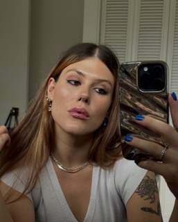

Hello, my name is Emma Byblow, and I am a graphic designer from Calgary, AB, Canada. I really enjoy making posters and merchandise, as well as a variety of other projects. I also made this website from scratch, which was very cool. I created the custom cursor in Blender, with a purple Jello-O effect. I really like the colour purple, which is where the name comes from. I am not in a cult about the colour purple, although I would not be opposed to something like that. While I am currently studying Graphic Design at SAIT, I am still interested in pursuing creative projects, so feel free to contact me to work together :)
